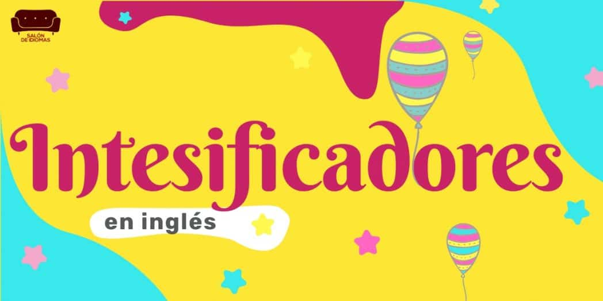
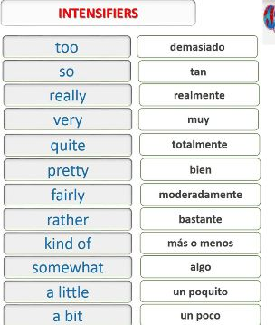
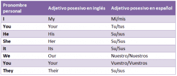

Tema 1
Ingles

En este apartado voy a explicarle al usuario un poco del tema visto en mi clase de ingles de esta semana
El tema de esta clase fue "intensificadores", los intensificadores son palabras que nos ayudaran a dar mas detalle a algo que quiero decir, estos son algunos ejemplos

Cuando agregamos un intensificadorn aumentamos en un punto el adverbio o adjetivo por que se puede usar en ambos. Hay algunos adverbios que se puede utilizar la opcion de agregar "ly" como por ejemplo en la palbara "beautifully" que significa "hermosamente", pero hay otras en las ue no es necesario.
Como ya sabemos los adverbios describen mejor un verbo, los adjetivos describen mejor un sustantivo y lo sustantivos on personas,lugares,ideas o cosas

Acontinuacion aparecera una tabla de lo adverbios intensificadores
| Adjetivo |
Pretty/Quite |
Very |
Really |
| Adverbio |
Bastante |
Muy |
Realmente |
| 0 |
+1 |
+2 |
+3 |
En conclusion los intensificadores valla la redundancia nos van a ayudar a intensificar o remarcar algo que tengamos que decir por ejemplo "El habla realmente fluido" en ingles se escribe "He speaks REALLY fluent"